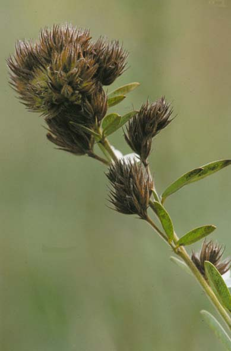
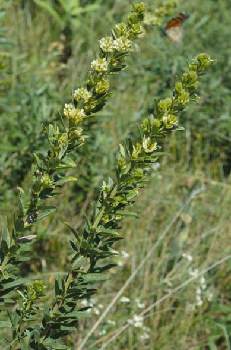

Lespedeza Capitata
Family: Fabaceae
Round-Headed Bush Clover
Swink/Wilhelm # 4

Click to view larger photo
FLOWERING: August to mid-September
SEED TIMING: October to November
HABITAT: Dry to mesic prairie
DIAGNOSTIC FEATURES: 2 - 3 feet high. Leafy, wand like plant with fuzzy, 3-parted, clover-like leaflets. Obscure, white, pea-shaped flowers are held in a globular, greenish head.
TO PICK: Flower heads turn rusty brown when mature. Pick entire head. Beans can be shaken out of ripe head.